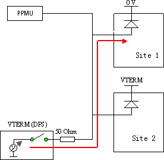
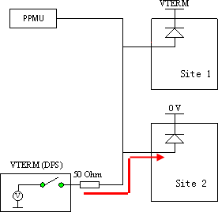

DC continuity test implementation
The termination method on shared lines requires a different methodology to test continuity. In shared driver environment the termination voltage together with the termination resistor is used to force a current into the ESD diodes. The pin PMU is used to measure voltage on the shared line.
To test the connection, the following basic measurement principle is used:
- The termination DPS is used as active voltage source.
- The 50 ohm resistance acts as current limiter.
- The pin PMU is used as a voltmeter with high impedance throughout the measurement
Example
The figure below illustrates an example of a two sites sharing (x2 sharing) environment.
The connection to site 1 is powered down (VDD put to 0 Volt). Site 2 is powered up with a supply voltage VDD equal to Vterm.
When the DPS, providing a voltage (VTERM) greater than the diode drop voltage, is connected to the shared line:
- A forward current will flow into the diode of site 1.
- The current flow into site 2 is nil (as long as the supply voltage for the devices is equal to the termination voltage Vterm).
- The forward current into site 1 causes a voltage drop on the 50 ohms termination resistor.
- The pin PMU measures the voltage that is equal to the voltage at the device input pins.
Because the forward bias voltage is tied to the bias current (which behaves exponentially) a reliable voltage margin can be retrieved to differentiate between 'Connect' and 'Open' state of the connection to the input pin of site 1. The retrieved voltage margin - the voltage difference between VTERM and the retrieved voltage - is an indicator of the amount of current flowing into the input of site 1. This current can be calculated with the following formula:
Current = voltage margin / 50 ohm

For site 2 the same as above can be applied. This time powering up site 1 with VTERM instead of site 2.

Functional changes
- Introduced before SmarTest 6.3.2